portfolio kimjaemin
portfolio portfolio portfolio
웹 표준 사이트
Webstandard
웹 표준은 월드 와이드 웹의 측면을 서술하고 정의하는 공식 표
준이나 다른 기술 규격을 가리키는 일반적인 용어이다. 최근에
이 용어는 웹 사이트를 작성하는 데 중요도가 높아지고 있으며
웹 디자인, 개발과 관계가 있다.
웹 접근성은 장애를 가진 사람과 장애를 가지지 않은 사람 모두
가 웹사이트를 이용할 수 있게 하는 방식을 가리킨다. 사이트가
올바르게 설계되어 개발되고 편집되어 있을 때 모든 사용자들
은 정보와 기능에 동등하게 접근할 수 있다. 예로들면 이미지
대체 텍스트 입력을 위한 입력필드가 마련되어 있어야 한다.
Webstandard Sire
https://miki5237.github.io/com/site-webstandard/index.html
<!-- 웹 접근성 -->
<div class="gallery-img">
<div>
<!-- 의미있는 사진에는 대처 택스트를 입력해야 합니다. -->
<!-- <img src="img/gallery01.jpg" alt="">(X) -->
<!-- <img src="img/gallery01.jpg" alt="겔러리1">(O) -->
<a href="#"><img src="img/gallery01.jpg" alt="겔러리1"></a>
</div>
<div>
<a href="#"><img src="img/gallery02.jpg" alt="겔러리2"></a>
</div>
<div>
<a href="#"><img src="img/gallery03.jpg" alt="겔러리3"></a>
</div>
<div>
<a href="#"><img src="img/gallery04.jpg" alt="겔러리4"></a>
</div>
<div>
<a href="#"><img src="img/gallery05.jpg" alt="겔러리5"></a>
</div>
</div>
IR효과는 이미지 대체텍스트 제공을 위한 CSS 기법으로 다양
한 CSS 기법을 사용하여 이미지 대체텍스트를 제공할 수가 있
으며, 이 중에 널리 알려진 기법들을 소개하고자 한다. Daum
은 이러한 여러 가지 기법 중에서 Phark Method와WA IR
기법을 주로 사용하여 대체텍스트를 제공해주고 있다.
Webstandard Sire
https://miki5237.github.io/com/site-webstandard/index.html
/* IR 효과 */
/* 의미있는 이미지의 대체 텍스트를 제공하는 경우 */
.ir_pm {
display: block;
overflow: hidden;
font-size: 0;
line-height: 0;
/* 내어쓰기를 통해 글자를 숨겻지만 선택을
통해 대체 텍스트로 인식할 수 있습니다 */
text-indent:-9999px;
}
/* 의미있는 이미지의 대체 텍스트를
이미지가 없어도 대처 텍스트를 보여주고자 할 때 */
.ir_we {
display: block;
overflow: hidden;
position: relative;
/* z값을 음수로 줌으로서 사진 뒤로 글자를 보냈습니다. */
z-index: -1;
width: 100%;
height: 100px;
}
/* 대처 텍스트가 아닌 접근성을 위한
숨김 텍스트를 제공할 때 */
.ir_so {
overflow: hidden;
position: absolute;
/* 크기를 0으로 지정해 눈으로는 보이지 않음 */
width: 0;
height: 0;
line-height: 0;
text-indent: -9999px;
}
이미지 스프라이트(image sprite)란 여러 개의 이미지를 하
나의 이미지로 합쳐서 관리하는 이미지를 의미합니다. 웹 페이
지에 이미지가 사용될 경우 해당 이미지를 다운받기 위해 웹 브
라우저는 서버에 이미지를 요청하게 됩니다.
Webstandard Sire
https://miki5237.github.io/com/site-webstandard/index.html
/* 이미지 스프라이트 */
.header .header-icon a {
display: inline-block;
width: 60px;
height: 60px;
/* 여려 이미지를 한 이미지에 합쳐서 만든 icon.png*/
background-image: url(../img/icon.png)
}
/* 보여지는 백그라운드 이미지의
좌표값을 움직여 보여주고 싶은 이미지로 이동 */
.header .header-icon a.icon1 {
background-position: 0 0;
}
.header .header-icon a.icon2 {
background-position: 0 -60px;
}
.header .header-icon a.icon3 {
background-position: 0 -120px;
}
.header .header-icon a.icon4 {
background-position: 0 -180px;
}
.header .header-icon a.icon1:hover {
background-position: -60px 0;
}
.header .header-icon a.icon2:hover {
background-position: -60px -60px;
}
.header .header-icon a.icon3:hover {
background-position: -60px -120px;
}
.header .header-icon a.icon4:hover {
background-position: -60px -180px;
}
스킵 메뉴는 웹 접근성에 관련되어 있으며, 앞을 보지 못해 마
우스를 사용하지 못하는 사람들, 즉 키보드만으로 웹을 사용하
는 사람들을 위해 페이지마다 계속 나오는 메뉴 등을 건너뛰게
하는 기능이다.
Webstandard Sire
https://miki5237.github.io/com/site-webstandard/index.html
/* 스킵 내비게이션 */
#skip {position: relative;}
#skip a {
border: 1px solid #fff;
background-color: #333;
color: #fff; width: 140px;
text-align: center;
position: absolute;
/* 가릴수있게 top값을 줘서 화면 밖으로 치움*/
left: 0px; top: -50px;
font-size: 14px; padding: 10px;
}
/* 가상요소 :focus를 줘서 텝으로 선택될때 top값을 0으로 줘서
다시 보이게 함 */
#skip a:active,
#skip a:focus {top: 0px;}
Web standard site Web standard site Web standard site
웹 반응형 사이트
ReactiveWeb
반응형 웹 디자인(responsive web design, RWD)이란
하나의 웹사이트에서 PC, 스마트폰, 태블릿 PC 등 접속하는 디스
플레이의 종류에 따라 화면의 크기가 자동으로 변하도록 만든
웹페이지 접근 기법을 말한다.
미디어 쿼리는 화면(screen), 티비(tv), 프린터(print)와 같
은 미디어 타입(media type)과 적어도 하나 이상의 표현식
(expression)으로 구성됩니다. 표현식은 width, height,
color와 같은 미디어 특성(media feature)들을 이용하여
상태에 따라 다른 스타일 시트를 적용할 수 있습니다.
Responsive Sire
https://miki5237.github.io/com/site-respomsive/index.html
/* 미디어 쿼리 */
/* width값이 1220px 이하일때 */
@media (max-width:1220px){
.container {width: 100%;}
.row {padding: 0 15px;}
#contents .container {border: 0;}
.lightbox {grid-template-columns: repeat(4, 1fr);}
.lightbox a:nth-child(5n) {display: none;}
}
/* width값이 1024px 이하일때 */
@media (max-width:1024px){
.lightbox {grid-template-columns: repeat(3, 1fr);}
.lightbox a:nth-child(10) {display: block;}
}
/* width값이 960px 이하일때 */
@media(max-width:960px){
.nav > div {float: none; width: 100%;}
.nav > div li {width: 33.3333%; }
.nav > div:last-of-type {width: 100%;}
.nav > div:last-of-type li {width: 33.3333%;}
.nav > div ul {margin-bottom: 10px;}
#cont-right {
position: static; width: 100%;
border-top: 1px solid #dbdbdb; overflow: hidden;
}
#cont-right .column {
float: left; width: 33.3333%; box-sizing: border-box;
}
#cont-right .column.col7 {
border-right: 1px solid #dbdbdb; border-bottom: 0;
}
#cont-right .column.col8 {
border-right: 1px solid #dbdbdb; border-bottom: 0;
}
#cont-center {
margin-right: 0; border-right: 0;
}
}아이콘 폰트는 이미지가 백터 그래픽 형태로 되어 있어서 크기
를 늘리든 줄이든 상관없이 선명한 화질을 보장받을 수 있고 색
상도 일반 웹폰트처럼 CSS에서 color 속성으로 변경을 할
수가 있습니다. 다만 아이콘이 폰트형식이기 때문에 단색으로
밖에는 설정할 수 가 없습니다.
Responsive Sire
https://miki5237.github.io/com/site-respomsive/index.html
<article id="title">
<div class="container">
<div class="title">
<h2>"나는 퍼블리셔다."</h2>
<a href="#" class="btn">
<i class="fas fa-angle-down" aria-hidden="true"></i>
<!-- 아이콘 폰트 -->
<!-- 잘 안쓰는 i태그를 이용해서 저장된 아이콘을 불러옴 -->
<span class="ir_so">전체 메뉴보기</span>
</a>
</div>
</div>
</article>
MIT 에서 무료로 배포하는 이미지 슬라이더로 모바일 / 웹 모
두에서 마우스와 터치에 반응하는 장점이 있다. 기본 골격에다
가 간단히 클래스이름이랑 사진만 넣어도 구현이 되고, 화면전
환 속도나 방향, 요소들(버튼 등) 디자인 등에 대한 커스터마이
징이 가능하다. 간편하게 플러그인으로 쉽게 사용이 가능하다.
Responsive Sire
https://miki5237.github.io/com/site-respomsive/index.html
//슬릭 이미지 슬라이드 //플러그인 연동해야함<script src="assets/js/slick.min.js"></script> <script>$(document).ready(function(){ $('.slider').slick({ //하단 paging버튼 노출 여부 dots: true, //양방향 무한 모션 infinite: true, //모션 스피드 speed: 500, //좌우 화살 버튼 노출 여부 ( false 시 안보임 ) arrows: true, //자동플레이 유무( false시 자동플레이 안됨 ) autoplay: true, //자동플레이 스피드 autoplaySpeed: 3000, //사이트에는 없지만 메모한거 //페이드모션 실행 여부 fade: true, //마우스 오버시 슬라이드 이동 멈춤 pauseOnHover: false, pauseOnHover:true, //화면에 보여질 이미지 갯수 slidesToShow: 3, //스크롤시 이동할 이미지 갯수 slidesToScroll: 3 }); });</script>
라이트박스는 페이지를 전환하는게 아니라 별도의 팝업창을 실
행해 사용자에게 이미지나 정보를 제공하는 기능이다. 배경이
어두워지고 팝업창이 뜨므로 라이트박스라는 이름이 붙었다.
간편하게 플러그인으로 쉽게 사용이 가능하다.
Webstandard Sire
https://miki5237.github.io/com/site-webstandard/index.html
/* css */ .gallery { position: relative; border: 1px solid #ccc; height: 254px; overflow: hidden; } .gallery h4 { border-bottom: 1px solid #ccc; font-size: 14px; color: #0093bd; font-weight: bold; padding: 8px 10px; }//스크립트 //플러그인이랑 연동해야함<script src="assets/js/lightgallery-all.min.js"></script> <script>$(document).ready(function(){ //라이트 박스 $(".lightbox").lightGallery(); });<script>
Reactive Web Site Reactive Web Site Reactive Web Site
단체 기업 사이트
enterprise
기업 웹 사이트는 쉽게 설명하자면 ‘고객들이 회사를 들여다보
는 창’이라고 할 수 있다. 온라인상에서 일종의 헤드쿼터 역할
을 하는 것이 기업의 웹 사이트라 할 수 있다. 최근 들어 실리콘
밸리의 잘 나가는 기업들인 애플, 구글, 페이스북, 엔비디아 등
이 가장 열을 올리는것이 새 본사(사이트) 건설 경쟁이다.
숨겨진 메뉴는 패럴랙스를 이용해 상단 메뉴바를 스크률을 내
릴 때 숨기다가 스크률을 올릴 때 보여주는 스크립트입니다. 스
크롤 값을 감지하기 위한 변수를 만들고, 브라우저 높이, 컨텐
츠 높이, 헤더의 높이를 구해 스크룰을 올리거나 내릴때 클레스
를 컨트률하여 보이거나 사라지게합니다.
농심
https://miki5237.github.io/com/nongsim/index.html
/* header */
let wHeight = $(window).height(); // 브라우저 높이
let dHeight = $(document).height(); // 컨텐츠의 높이
let hHeight = $("#header").outerHeight(); //80 헤더의 높이
let moveScroll; //스크롤 값을 감지하기 위한 변수
let lastScrollTop = 0; //스크롤의 마지막 위치 값
//window스크롤 값을 만들어둔 변수에 저장
$(window).scroll(function(){
moveScroll = true;
});
setInterval(function(){
if(moveScroll){
hasScroll();
moveScroll = false;
}
},250)
function hasScroll(){
let wScroll = $(this).scrollTop();
if(wScroll > lastScrollTop){ //스크롤을 내렸을 때
$("#header").addClass("on");
//클레스 추가 (css에서 display: block;를 on클레스에 속성을 추가)
} else {
//wScroll (스크롤 값) + wHeight (브라우저 높이)
//의 값이 dHeight (컨텐츠의 높이)보다 클수 없다.
if( wScroll + wHeight < dHeight ){ //스크롤을 올렸을 때
$("#header").removeClass("on"); //클레스 제거
}
}
lastScrollTop = wScroll
}
패럴랙스는 주로 웹사이트에서 사용되는 기술로 스크롤에 따라
오브젝트와 배경 이미지가 시간차를 두고 변하는 기법을 의미
합니다. 패럴랙스 스크롤링은 스크롤에 따라 3D 효과와 깊이
감을 제공함으로써 사용자와의 인터랙션을 높이고 호기심을
자극하여 사이트에 머무는시간을 늘려줄 수 있습니다.
농심
https://miki5237.github.io/com/nongsim/index.html
$(window).scroll(function(){
//window스크롤값 + window의 height값의 /2
const scrollTop = $(window).scrollTop() +$(window).height()/2;
$("#contents > section").each(function(){
//각각 "#contents > section"에 스크롤로 도달 시 이벤트 발생
if(scrollTop > $(this).offset().top) {
//자기 자신에게 클레스 추가
//효과를 css로 주면 됨
$(this).addClass("show");
}
});
});
웹 페이지 제작을 하다보면 탭 메뉴를 이용하여 컨텐츠를 보여주
고 숨겨줘야 할 때가 있습니다. 특히 요즘은 대부분의 경우 반응
형 웹 페이지를 기본으로 만들기 때문에 PC보다 더 작은 화면의
디바이스로 갈 경우, 한정된 공간 안에서 효율적으로 컨텐츠를
보여주기 위해선 탭 메뉴 레이아웃을 이용합니다.
농심
https://miki5237.github.io/com/nongsim/index.html
/* nlive */
//각각의 버튼을 변수에 저장
let tabBtn = $(".nlive-tabs > ul > li");
//각각의 콘텐츠를 변수에 저장
let tabCont = $(".nlive-posts > div");
//모든 콘텐츠를 숨기고 첫번째 콘테츠만 노출
tabCont.hide().eq(0).show();
tabBtn.click(function(event){
//a테그 고유링크 깨트리기
event.preventDefault();
//버튼의 타겟을 변수에 저장
let target = $(this);
//버튼의 순서를 변수에 저장
let index = target.index();
//버튼의 클래스를 삭제
tabBtn.removeClass("active");
//타겟 버튼의 클래스를 추가
target.addClass("active");
//컨텐츠를 기본적으로 가리기
tabCont.css("display","none");
//벼튼의 순서 변수에 지정된 컨텐츠의 모습 보이기
tabCont.eq(index).css("display","block");
});
CSS 전처리기는 전처리기의 자신만의 특별한 syntax를 가지
고 CSS를 생성하도록 하는 프로그램입니다.믹스인, 중첩 셀렉터,
상속 셀렉터, 기타 등등. 이러한 특징은 CSS 구조를 가독성있고
더 유지보수 하기 좋게 합니다.
농심
https://miki5237.github.io/com/nongsim/index.html
.story-frame {
width: 300px; height: 600px; border: 10px solid #000;
position: absolute; left: 50%; top: 0px; z-index: 1;
transform: translateX(-50%);
border-radius: 40px;
box-shadow: 0px 0px 40px rgba(0,0,0,0.3);
}
@for $i from 1 through 30 {
.swiper-slide:nth-child(#{$i}) {
.simg {
background: url(../img/tbanner#{$i}.jpg) no-repeat center center;
background-size: cover;
}
}
}
group enterprise site group enterprise site group enterprise site
개인 영화 사이트
personalfilm
영화 사이트는 영화 정보를 모아서 멋지게 홍보하는 전통적인
프로모션 웹사이트, 영화의 주제와 사용자 참여를 적당히 믹스
한 상호작용이 훌륭한 웹사이트, 등 다양한 개성의 영화 홍보
목적의 사이트를 영화 사이트라고 합니다.
드롭다운 메뉴는 가장 전형적이고 어디에서나 볼 수 있는 메뉴
스타일입니다. 메뉴의 제목이 표시되어 있는 곳을 선택하면 메
뉴가 아래로 펼쳐집니다. 메뉴 내의 항목으로 마우스의 포인터
를 옮기면 그에 따라 각 항목이 반전되고, 클릭하면 그 항목이
선택 및 실행됩니다.
Movie Site
https://miki5237.github.io/com/poo/index.html
//각각의 버튼에 마우스 오버 시 이벤트
$(".nav ul li").mouseover(function(){
//버튼순서의 자식인 컨텐츠를 보여줌
$(this).find(".subMenu").stop().show();
});
//오버된 마우스가 떠날 때
$(".nav ul li").mouseout(function(){
//버튼순서의 자식의 컨텐츠를 숨김
$(this).find(".subMenu").stop().hide();
});
입력필드는 사용자가 키보드로 직접 텍스트를 입력하는 곳으로
서 편집 필드 또는 텍스트 상자 등으로도 불립니다. 특정 항목
의 속성을 입력할 때 외에도 검색, 정보 입력 등 상황에 따라 각
기 다른 목적으로 사용됩니다. 여러 줄을 입력할 수 있을 때는
입력 영역(Text Area)이라고도 부릅니다.
Movie Site
https://miki5237.github.io/com/poo/index.html
<!-- 보통 기본적인 입력필드 구성 -->
<div class="Searchlist">
<div class="abox">
<div class="input">
<!-- input테그를 이용한 입력필드 -->
<!-- placeholder에 글자를 입력시 예시글 표시 -->
<input type="text" placeholder="영화명을 입력해 주세요">
<!-- button 버튼태그 -->
<button><a href="#">
<img src="assets/img/iconmonstr-magnifier-2.svg" alt="검색">
</a></button>
</div>
</div>
</div>
이미지 스프라이트(image sprite)란 여러 개의 이미지를 하
나의 이미지로 합쳐서 관리하는 이미지를 의미합니다. 웹 페이
지에 이미지가 사용될 경우 해당 이미지를 다운받기 위해 웹 브
라우저는 서버에 이미지를 요청하게 됩니다.
Movie Site
https://miki5237.github.io/com/poo/index.html
/* 이미지 스프라이트 */
.co5imgbox2{
height: 170px;
width: 170px;
margin-left: 16px;
.co5imgbox1-2{
height: 170px;
width: 170px;
/* 백그라운드 사진 넣기 */
background: url(../img/con5/bg-main-megainfo-mx.png);
background-position-x: 0px;
background-size: 170px;
border-radius: 10px;
}
.co5imgbox1-2:hover{
/* 마우스 오버 시 사진의 좌표값을 이동 */
background-position: 0 -170px;
}
}
가상요소는 가상 클래스(pseudo-classes)처럼, 가상 요소
(pseudo-element)는 선택자(selector)에 추가되지만 특
별한 상태를 기술하는 대신, 문서의 특정 부분을 스타일할 수
있습니다. 이 영화 사이트에서는 컨텐츠1에 들어가있는 백그라
운드 이미지에 명암을 넣기위해 사용했습니다.
Movie Site
https://miki5237.github.io/com/poo/index.html
/* 가상요소 */
#wrap{
background-image:
url(assets/img/B467A2-FAA5-4CE5-BF83-EC1C2E9EE473.large.jpg);
width: 100%;
height: 4096px;
position: relative;
.container{
width: 100%;
margin: 0 auto;
background: rgba(0,0,0,.3);
position: relative;
/* cscc에 &를 통해 쉽게 가상요소 지정가능 */
/* css사용 시 클레스 뒤에 붇히면 사용가능 */
&::before {
/* 가상요소 이용 시 content를 지명해야함 */
content: '';
border-bottom: 1px solid rgba(255,255,255,.2);
/* 앱솔루트화 시켜서 상위박스에 붇기 편하게 하기 */
position: absolute;
top: 85px; left: 0;
width: 100%;
height: 1px;
}
}
}
personal film site personal film site personal film site
Animation
text
animation
CSS3 애니메이션은 엘리먼트에 적용되는 CSS 스타일을
다른 CSS 스타일로 부드럽게 전환시켜 줍니다. 애니메이
션은 애니메이션을 나타내는 CSS 스타일과 애니메이션의
중간 상태를 나타내는 키프레임들로 이루어집니다.
see My CODE 
자바스크립트를 모르더라도 간단하게 애
니메이션을 만들 수 있습니다. 자바스크
립트를 이용한 애니메이션은 잘 만들어졌
더라도 성능이 좋지 못할때가 있습니다.
see My CODE
CSS 애니메이션은 frame-skipping 같은 여러 기술을 이용하여
최대한 부드럽게 렌더링됩니다. 브라우저는 애니메이션의 성능을
효율적으로 최적화할 수 있습니다.
svg
animation
text요소는 SVG 그래픽 내에 텍스트를 마크업 할 때
사용합니다. 많은 속성 옵션을 제공하며, 그레디언트, 패
턴, 클리핑 패스, 마스크 또는 필터에도 적용 할 수 있습니
다. SVG 그래픽은 일반 그래픽 이미지와 달리 SVG 코드
내에서 쉽게 변경하고 편집 할 수 있어 그래픽에 확장 가능
한 텍스트를 포함하는 매우 강력한 기능을 제공합니다.
see My CODE
인터넷 익스플로러 9 버전 이상부터 지원
합니다.
XML을 이용하여 라인, 곡선, 기하학적인
그래픽 표현이 가능합니다.
see My CODE
벡터 방식이기 때문에 확대하거나 축소가 가능합니다.
DOM 단위로 컨트롤이 가능하지만 문서 복잡도가 증가되면 렌더
링이 느려집니다.
Green Sock
Animation
GSAP는 GreenSock 의 업계 표준 JavaScript 애니메
이션 라이브러리로 모든 주요 브라우저에서 작동하는
고성능 애니메이션 을 만들 수 있습니다 . WebGL /
Canvas / Three.js 컨텍스트뿐만 아니라 DOM 요소에
서도 사용할 수 있습니다.
see My CODE
GreenSock을 사용하면 여러 베 지어
핸들로 고급 효과를 만들 수 있습니다.
용이성 시각화 도구를 확인하면 무슨 뜻
인지 알 수 있습니다.
GreenSock은 읽기 쉬우 며 타임 라인
자체를 제어 할 수 있습니다.
see My CODE
플러그인 형태로 다양한 고급 기능을 제공하여 SVG 모양 변경,
SVG 경로 그리기, 드래그 앤 드롭, 관성 등과 같은 작업을 한 단
계 더 발전시키고 싶을 때 사용할 수 있습니다.
SCRIPT
JAVASCRIPT
PHP
introduction
자기소계 인생을 살아가는데 있어서 성공과 실패를 결정하는 잣대는 ‘자신이 어떻게 생각하고, 행동하느냐’ 라고 생각합니다. 긍정의 힘을 믿고 긍정의 생각을 가진 사람에게는 실패도 다시 도전할 수 있는 기회로 받아들여 질 수 있으며, 그렇지 못한 사람에게는 성공도 불안한 미래로 보여 질 것입니다. 긍정을 바라볼 줄 아는 생각의 차이가 더 나은 미래를 내딛는 힘이 되어 준다고 생각합니다.
긍정의 생각은, 고난과 역경에 부딪혔을 때에도 슬기롭게 해결해 갈 수 있는 지혜가 되어 주며, 희망찬 미래를 생각할 줄 아는 사람으로 변화 시켜 줍니다. 저에게는 육체적으로 어려웠던 군 생활과 정신적으로 힘들었던 대학 입시경쟁, 취업에 대한 심적 압박감 등 여러 어려움 속에서 언제나 슬기롭게 대처하고, 긍정적으로 즐겁게 이겨낼 수 있었던 가장 큰 힘은 ‘긍정’이라고 생각합니다. 이런 저는 사회생활에 있어서도 늘 자신감과 앞으로 다가 올 미레에 어떤 수난이나 역경이라도 긍정적인 생각으로 버틸수있다고 생각합니다.
flex 대부분 사이트는 전체 레이아웃이 수직 구성이며 ‘위-아래’로 스크롤 하여 사용합니다.
레이아웃을 구성할 때 가장 많이 사용하는 요소(Elements)들이 기본적으로 블록(Block) 개념으로 표시(Display)되며 이는 뷰(View)에 수직(위에서 아래로)으로 쌓이기 때문에 수직 구성은 상대적으로 쉽게 만들 수 있습니다.
하지만 수평(왼쪽에서 오른쪽으로) 구성의 경우는 상황이 조금 다릅니다.
문제는 수평 구조를 만드는 속성이 명확하지 않았기 때문인데, 그래서 많은 경우 table나 float 혹은 inline-block 등의 도움을 받았습니다.
하지만 이러한 방법들은 다양한 문제(Clear, White space 등, 해결은 가능하지만..)를 가지고 있기 때문에 결국 수평 레이아웃 구성의 차선책일 뿐이며, 이제 우리는 Flex(Flexible Box)라는 명확한 개념(속성들)으로 레이아웃을 쉽게 구성할 수 있습니다.
영월공업고등학교 저는 이 학교에 나와서 SMT전공을 했습니다. 원레 매우 소심하였던 저에게 그 단점을 무마할수 있는 학교가 되었습니다. 고등학생때부터 저를 받아주는 친구들이 생기면서 서서히 소심함이라는 장벽이 허물기 시작했습니다. 자신의 의견을 적극 내새울수있는 계기도 되었고, 물론 처음볼땐 소심함이 남아있지만 한번 친해지면 장벽이 사라지는 느낌을 들며 의사소통이 쉽게 가능해졋습니다.
닷홈 애니시큐어 주식회사에서 운영중인 웹사이트 호스팅 사이트. 도메인, 웹 호스팅, 리눅스 호스팅, 웹 메일 등을 제공한다.여느 호스팅 서비스와 마찬가지로 무료 호스팅으로 신청한 후 유료로 전환할 수도 있다. 다만 한 번 유료로 전환하고 나면 무료로 재전환할 수는 없다. 마찬가지로 유료로 전환한 후(혹은 처음부터 유료로 시작한 후) 상위 상품으로 업그레이드를 할 수도 있으나 하위 상품으로의 다운그레이드는 불가하다.사용가능한 도메인은 .com .net .org .info .biz .co.kr .kr .pe.kr .ne.kr .한국, 이렇게 10개이며, 가격은 1년에 22,000원이다.도메인을 구매하면 해당 기간동안 무료로 무제한 웹호스팅 공간을 제공한다. 하지만 동시접속자 제한과 파일갯수의 제한이 있어 완전한 무제한은 아니므로 주의.
제이쿼리 많은 서버 측 프레임워크와 라이브러리에서 제공하는 기능 중 하나는 핵심 코드 기반에 대한 확장 기능을 만드는 것입니다. 현대적인 클라이언트 측 라이브러리와 프레임워크에서는 이것이 가능하며 이는 jQuery도 마찬가지입니다.
예를 들어, 각 프로젝트마다 동일한 기능을 만드는 일을 한다고 해봅시다. 또는 판매하는 제품이 있고 jQuery와 통합해야 하는 약간의 사용자 정의 코드가 있지만 프로젝트에 따라 다른 매개변수가 필요할 수도 있습니다.
그럼 어떻게 해야 할까요?
다행히도 jQuery는 플러그인을 지원합니다. 즉, 개발자는 다른 사람들이 작성한 플러그인(어떤 플러그인은 jQuery 웹 사이트에서 구할 수 있고 또 어떤 플러그인은 깃허브에서 구할 수 있음)을 활용할 수 있을뿐더러 직접 플러그인을 개발할 수도 있습니다.
그런 다음 이 코드를 프로젝트에서 재사용하거나 다른 사람들이 기여하고, 오류를 수정하고, 기능 등을 제공할 수 있도록 깃허브 같은 사이트에서 내려받을 수 있게 만들 수 있습니다.
라인아트학원 저에게 새로운 길을 열어준 한줄기의 빛과같은 학원이였습니다. 저는 디엘티라는 회사에 3년 2개월을 다니다 그만두고 자신개발의 시간이 생겨 운전면허를 따고, 취업상담을 하여 진정 나 자신이 원하는 길을 해매다가 친구의 추천으로 한가지의 길을 알게되었습니다. "웹 퍼블리셔"처음에 보면서 과연 내가 할수있을까? 너무 어려워 중간에 포기해버리면?이라는 걱정을 하였지만 "시작이 곧 반이다. "라는 명언이 생각나 "그래 함 해보자!"라는 마음으로 내일배움을 친구랑 같이 신청하며 힘들어도 친구랑 서로 의지를 하면서 배우다보니 저도 모르게 이 일이 재미있어지고 쉬워지고 더 많이 알게되었습니다. 저의 기술이 성장하는걸 느끼며 자기자신이 자랑스러워지기 시작했습니다. "이게 진정 내가 가야 할 길이였다." 라고 생각하여 "웹 퍼블리셔"라는 목표가 생겨 지원하게되었습니다.
HTML 하이퍼텍스트 마크업 언어(HyperText Markup Language, 문화어: 초본문표식달기언어, 하이퍼본문표식달기언어)는 웹 페이지를 위한 지배적인 마크업 언어입니다. 저의 새로운 길의 시작점이기도 합니다. 이 기술을 배우며 기초적인 사이트 재작능력이 매우 월등해지는 모습을 보며 뿌듯함을 느끼게 해준 언어입니다. 저에게 있어 진정한 성장의 시작점이라 부르는게 좋을거같습니다.
피그마 저는 Figma가 포토샵 를 처음 접했을 때 보다 좀 더 세련되고 실제 프로덕트 레벨에 가까운 상태로 나왔다고 단언할 수 있습니다. Figma는 자신을 돋보이게 할만한 뛰어난 세가지 기능을 가지고 있습니다: 실시간-협업 기능(real-time collaboration), 벡터 연결(vector networks), 그리고 버전 관리(version history)에 대한 부분들입니다. Figma를 통해서 여러 명의 디자이너들이 동시에 하나의 디자인 파일을 작업할 수 있게 되었습니다. 더욱 중요한 것은 Figma가 정말 빠른 도구이며, 20개가 넘는 아트보드들을 하나의 문서 안에서 손쉽게 작업할 수 있다는 점입니다.
티스토리 저는 이 사이트에 국가직무능력표준를 정리해놨습니다. 국가직무능력표준(NCS, national competency standards)은 산업현장에서 직무를 수행하기 위해 요구되는 지식, 기술, 소양 등의 내용을 국가가 산업부문별, 수준별로 체계화한 것으로, 산업현장의 직무를 성공적으로 수행하기 위해 필요한 능력(지식, 기술, 태도)을 국가적 차원에서 표준화한 것을 의미합니다. 취직할때 요구되는 표준 기술들을 공부하며 블로그에 하나 하나올려서 라인컴퓨터아트학원을 다니면서 웹 퍼블리셔 관련 국가직무능력표준기술을 업로드하였습니다.